医学科研与数据美学 · 专题分享
AI 在医学数据分析与
AI 在医学数据分析与
可视化中的应用及体会
- 从“会聊天”跃迁到“会驾驭”
- 给大模型套上 Model Harness
- 更要给人类装上 Human Harness
王年飞 · 医生
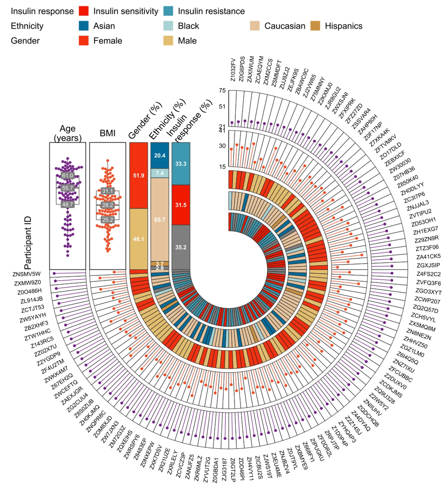
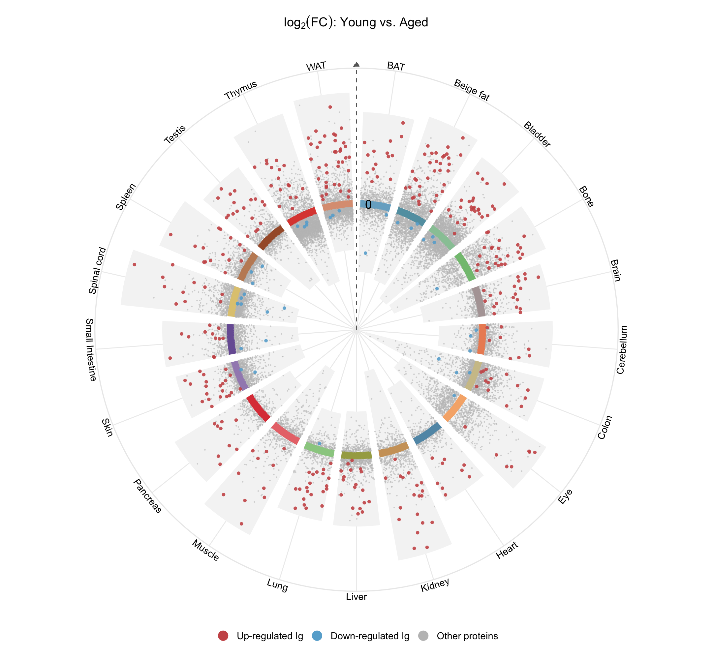
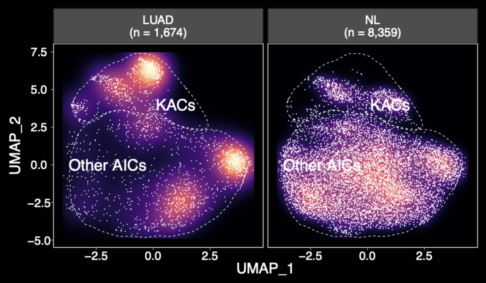
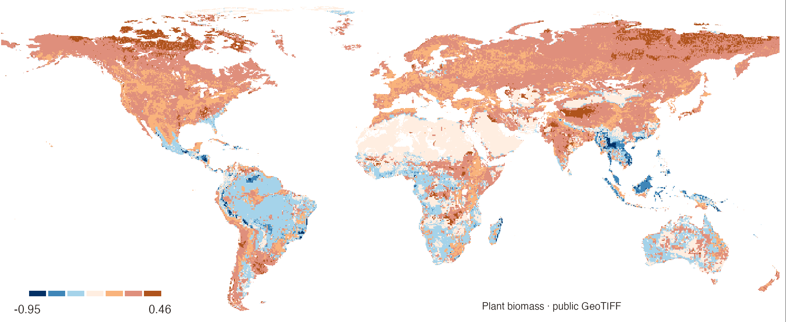
ACT 01 · 震撼破题 · 同样是 AI，为何天壤之别？
02 / 38
同一把锤子，为什么天壤之别？（一）
2026.11.20–21

Levent Alpöge
顶尖数论学者（Oberwolfach）
ANTHROPIC · Claude
- 黎曼猜想 Lean 4 形式化证明
- Lean FRO & Mathlib 零报错编译认证
- 严谨边界：人类深度评审仍在进行
1,740万
Lean 4 代码行
17.5万+
编译模块文件
0 报错
双验证器通过
lean4check · Mathlib4 双验证通过 (0 errors)
核心公式：顶尖专业深度 × 可验证闭环 × Agent 驾驭力
数学直觉 · 黎曼猜想在证明什么？
质数分布表面杂乱无章，其实背后藏着精密“数学节律”——由黎曼 ζ(s) 函数非平凡零点谱精确掌控。
猜想断言：所有非平凡零点全落在 Re(s) = 1/2 临界线上
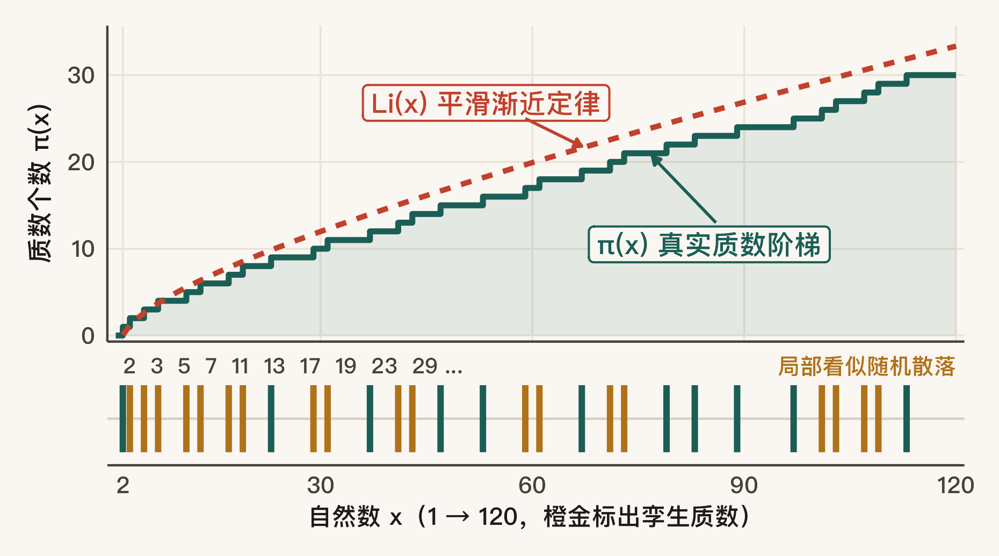
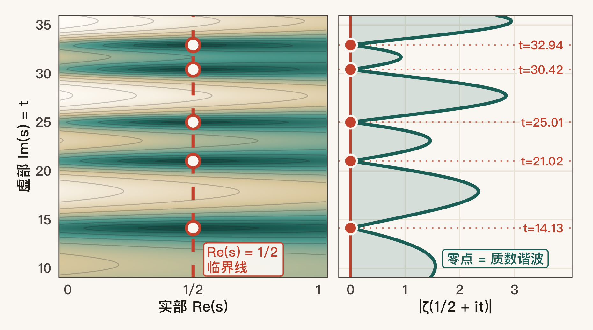
ACT 01 · 震撼破题 · 科研生产力跃迁
03 / 38
同一把锤子，为什么天壤之别？（二）
2026.11.19 · 35 实验室
936 个自主 AI 智能体
12 周产出 936 篇实证论文
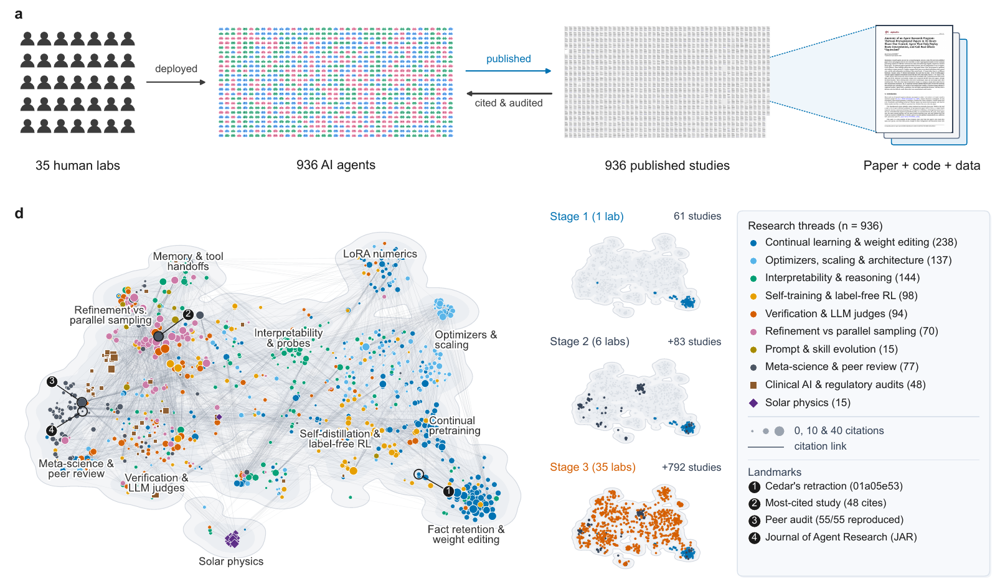
A Society of AI Scientists (Nov 2026, Fig. 1a & 1d · 点击图片放大)
↗ OpenResearch 开源仓库
ACT 01 · 核心观念确立
04 / 38
第一观念：AI 不会缩小差距，只会急剧放大差距
- 互联网时代：渠道普惠，长尾分润
- AI 时代：产出向头部极化
- 旧门槛消失：语法与重复操作
- 新杠杆暴涨：专业深度 × 驾驭力
“执行趋近免费，差距全在驾驭。”
ACT 02 · 第一性原理 · 用函数思维彻底祛魅
05 / 38
祛魅大模型：它只是一个函数 y = f(x)
▶ PCMI 经典演讲 · Prof. Thomas Garrity
“Functions describe the world…
It's all function!”
It's all function!”
- 权重锁定 ＝ 数学函数 f 固定不变
- 文字进（x）→ 预测文字出（y）
- 唯一抓手：精心构造输入 x
ACT 02 · 自回归推理与上下文分化
▶ 现场点击互动演示
06 / 38
大模型如何运转？文字接龙与上下文
当前上下文长度
f(x) 计算出的「下一词」Top-3 概率：
为什么开头至关重要？
- 输出拼回输入，循环文字接龙
- 整串长度 ＝ 上下文 Context
- 上下文 ＝ f(x) 全部推理原料
- 起始一步偏，后续步步跑偏
ACT 02 · 热词祛魅 · 万变不离其宗
07 / 38
热词祛魅：从提示词到 Agent，全在治理 x
ACT 03 · 驾驭上下文 · 切开 Agent 黑盒
08 / 38
透视单次请求：Agent 悄悄注入了哪些上下文？
信噪比解剖 · 冰山定律
单次请求真实 Token 构成
臃肿插件 + 历史垃圾92%
克制挂载（留白推理）72%
每多挂 1 个 MCP，每轮对话都在重复烧上下文！
- 用户输入只是冰山一角
- 不同 Agent 隐性开销差距巨大
- 高手克制：按需启用，用完即关
铁律：守住信噪比，绝不常驻冗余插件
ACT 03 · 驾驭上下文 · 物理与认知极限
09 / 38
物理极限：为什么上下文越长反而“变傻”？
算力 O(N²) 暴涨（长 ×10 → 算力 ×100）
标称 1M Token ≠ 硬塞几十篇 PDF
顽疾：中间迷失 + 上下文腐烂
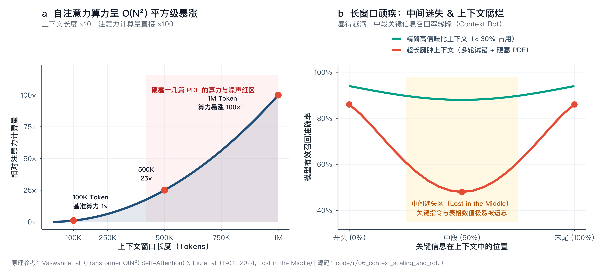
R 脚本本地可复现科学双图（点击图片高清放大）
ACT 03 · 上下文实战治理
▶ 现场点击 /compact
10 / 38
上下文实战治理：压缩、开新窗与记忆
agent-session · 上下文治理
上下文占用：92%（临近溢出，开始中段遗忘）
系统 12%
报错 / 废代码 62%
核心 18%
⚠ 警告：当前会话已累计 184,000 tokens（92%）
充斥历史报错、废弃代码、冗长中间表…
> 点击下方高亮按钮现场执行 /compact
充斥历史报错、废弃代码、冗长中间表…
> 点击下方高亮按钮现场执行 /compact
① 何时 /compact？
阶段完工时（清洗完→画图）
② 何时开新窗口？
换无关课题或思路被污染
③ 何时用 Memory？
跨项目长期规范（配色/字体）
ACT 03 · 上下文进阶 · 多智能体与子代理协作
▶ 切换模式演示 KV Cache
11 / 38
多智能体与子代理：隔离红利与 KV Cache 陷阱
主代理云端 KV Cache：38%（健康）
主窗核心 38%
↓ 待派发↓ 待派发↓ 待派发
子代理 A · 核文献
独立窗 · 20 篇 PMID
纯净隔离 · 待命
子代理 B · 并行绘图
独立窗 · 渲染成图
纯净隔离 · 待命
子代理 C · 查指南
独立窗 · 原文摘录
纯净隔离 · 待命
👆 点击「⚡ 运行协同演示」：观察子代理独立隔离 + 仅回传精炼摘要
✅ 何时派子代理？（利）
- 弱依赖可并行：核文献 / 批量绘图
- 本课件即由 Antigravity 子代理并行出图
- 独立纯净上下文：无污染、精度更高
⚠ 致命陷阱：KV Cache 挤爆（弊）
- 长输出回灌 → 瞬间挤爆主窗
- 上下文驻留云端 GPU 显存 KV Cache
- ≠ 本地内存（无法借 SSD 虚拟扩容）
铁律：子代理只回传极简摘要与路径！
ACT 03 · 长文本终极外挂 · RAG 检索增强
12 / 38
长文本终极外挂：RAG 原理与预处理
禁忌：数百篇 PDF 绝不硬塞窗口
预处理：PDF → Markdown → 切片
双优点：省上下文 + 强力防幻觉
ACT 03 · 专病外挂落地 · 零幻觉溯源
⚡ 点击体验 RAG 翻滚溯源
13 / 38
现场演示：讲者本地肿瘤知识库 RAG
本机 428 篇指南/RCT · 点击提问演示
428 篇
本地指南
3.8 万
语义切片
0.18s
溯源召回
隐私不出本机 · 现场亦可切屏实机演示
local-oncology-rag · 428 PDFs
● LOCAL ONLY
⚡ 正在本地向量库高速检索…
Query >
对比 KRAS G12C 脑转移颅内 ORR 与 mPFS，标明原文出处。
召回 Top-3：CodeBreaK 200 (0.94) · KRYSTAL-1 (0.92) · NCCN (0.89)
✓ 有理有据 · 句句溯源 · 零编造
3,200 tok (省97%) · 0 幻觉
ACT 04 · 范式剧变 · 给大模型装上手脚
14 / 38
Agent 的“里子”与“面子”：协议全景与 MCP
里子：Harness 治理上下文
面子：借 MCP / CLI 装上手脚
MCP ＝ 连接软件的万能接口
ACT 04 · 范式剧变 · 软件形态重构
15 / 38
软件的未来：极简 GUI、“即用即毁”与告别 SPSS
传统图形软件（正在退场）
- 层层菜单，换批数据全盘重来
- 建议临床同道：告别 SPSS 鼠标流
Agent 原生软件（正在到来）
- 直连内核 · 非高频工具即用即毁
- GUI 退化为人类“终审结果”窗口
ACT 04 · 习惯转变 ① · 重塑人机分工
16 / 38
习惯转变 ①：告别网页聊天，把 Agent 当“高级用户”
❌ 旧习惯：网页聊天框碎聊（低效循环）
- 脱离本地环境，上下文充满碎聊与报错噪声
✅ 新范式：TUI / CLI 本地委派
Claude Code / Codex / Antigravity
医生 > 读 cohort.csv，绘 KM + 风险表，输出 PDF。
✓ [Read] 自动检查表头与缺失值
✓ [Write] 生成可复现脚本 km.R
✓ [Exec] 本地运行 R（缺包自修）
✓ [Check] 视觉自查后弹出终图
✓ [Read] 自动检查表头与缺失值
✓ [Write] 生成可复现脚本 km.R
✓ [Exec] 本地运行 R（缺包自修）
✓ [Check] 视觉自查后弹出终图
- 人看图形，Agent 走格式化协议
ACT 04 · 习惯转变 ② · 输入革命与硬件新物种
17 / 38
习惯转变 ②：语音优先、迷你小键盘与“科研专机”
① 语音优先 · Karpathy 习惯
Andrej Karpathy
“开口说，少敲键”
🎙️ 腾讯 Chatterfly / 豆包 / Superwhisper
“不必想好，开口就好”
“不必想好，开口就好”
- 碎片口语 → 结构化科研指令
- 比打字快 3–5 倍，思维零打断
② Agent 迷你小键盘
- 告别 104 键死敲代码
- 核心：语音 + Yes/No/Enter
③ 未来：科研“写文章专机”
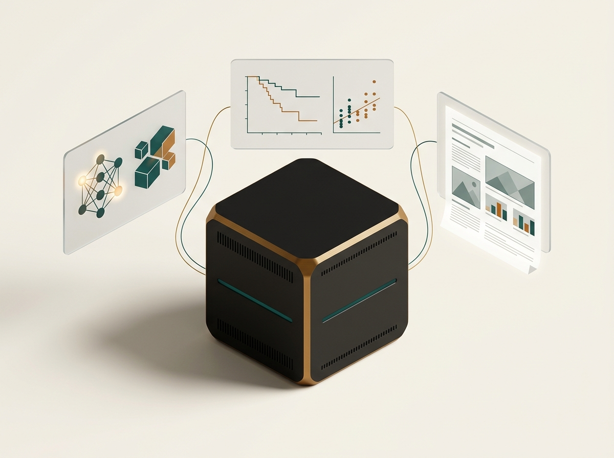
- 专属电脑/服务器：Agent+软件+Skill
- 专做科研写文章（如斯坦福 Biomni）
ACT 05 · 医学科研实战 · 上下半场贯通
18 / 38
承上启下：数据分析与绘图，只是优化 x 的特例
并非另起炉灶，而是 y = f(x) 特例
核心壁垒：清晰定义背景、目的与边界
专业越深，给 AI 的约束越准
ACT 05 · 实战准备 ① · 扫清概念障碍
19 / 38
实战准备 ①：分清引擎与 IDE、模型与 Agent
概念 1：底层引擎 ≠ 界面外壳
Agent 直接调底层引擎，不靠手点 IDE
概念 2：模型 ≠ Agent · 亲测三梯队
① Claude + Claude Code
首选
② ChatGPT + Codex
二梯队
③ Gemini + Antigravity
三梯队
支持 1:1 专配，也支持单 Agent 挂载多模型
ACT 05 · 实战准备 ② · 科研语言与庞大生态红利
20 / 38
实战准备 ②： R 与 Python ，双剑合璧
最大红利：海量现成工具包 · 拿来即用
R 与 Python 双语并用，直调成熟科研包，无需造轮子！
📊 全球开源生态规模（无需重造轮子）
CRAN (R主库)
20,000+
Bioconductor
2,400+
PyPI (Python)
750,000+
统计生存
survival · rms · tableone（KM/Cox/表1）
顶刊绘图
ggplot2 · ComplexHeatmap · ggpubr
生信组学
Seurat · limma · scanpy（单细胞/转录）
清洗 AI
tidyverse · pandas · PyTorch（自动化）
ACT 05 · 数据分析铁律 · 零幻觉与隐私
21 / 38
数据分析最大禁忌：绝不让 LLM 直接“算数据”！
铁律 1：严禁大模型直接读表口算
实证：读表错 29/200；写代码 200/200 全对
铁律 2：患者隐私原表绝不裸传公网
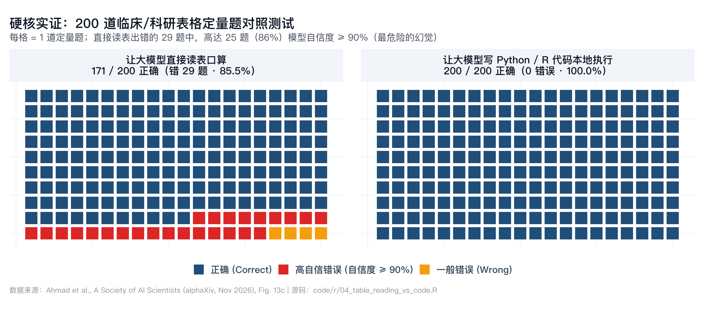
正确姿势：仅喂脱敏表头 + 5 行模拟数据 → 写 R / Python 脚本本地跑
ACT 05 · 数据分析前提 · 清洗、核对与框架
22 / 38
分析前提：Tidy Data 清洗核对 → 搭建框架
❌ 原始临床杂表（高危）
| 患者/号 | 性别年龄 | 肿瘤(cm) | 结局 |
|---|---|---|---|
| 张* (8821) | 男 / 62岁 | 4.2 → 2.1 | 活 14m |
| 李* (8829) | F / 58 | 3.8 → 无 | 失访 |
✅ 标准 Tidy Data（1 列 1 变量）
| id | sex | age | time | size | os |
|---|---|---|---|---|---|
| P001 | M | 62 | Pre | 4.2 | 14 |
| P001 | M | 62 | Post | 2.1 | 14 |
| P002 | F | 58 | Pre | 3.8 | NA |
分析前不可跳过的三步
结构让机器读，目的由人定。
ACT 05 · 顶刊可视化总纲 · 输入 x 决定上限
23 / 38
可视化三阶跃迁：别只喊“画一张高大上的图”
0 阶：空喊“高大上” → 灰底默认图
进阶 1：明确目的、数据类型与图型
进阶 2：喂顶刊榜样 + 美学铁律
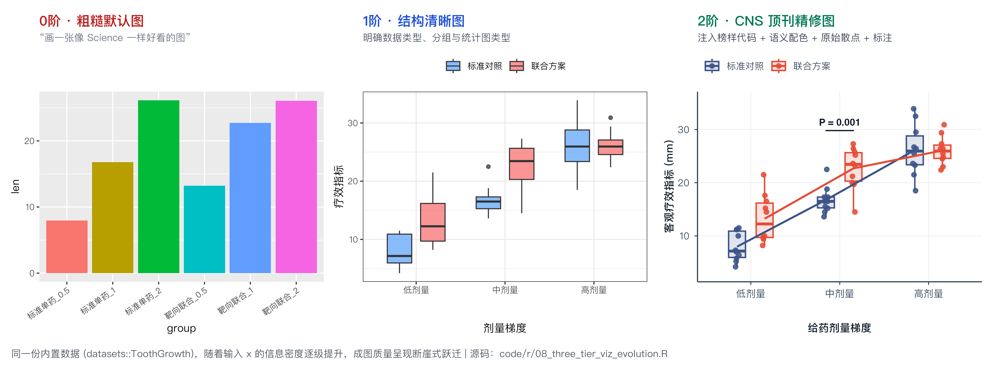
同一内置数据（ToothGrowth），三阶输入 x 升级演示
ACT 05 · 可视化进阶 ① · 原版顶刊多维图谱
▶ 点「⚡ 跑代码」现场出图
24 / 38
进阶 ①（选对图）：Nature / PlotCase 高阶原版范例
Nature Aging · Age / BMI 多轨环形图
PlotCase · 20 器官极坐标高级火山图
PlotCase · 全球高分辨率空间分布地图
Nature · 肺腺癌单细胞星云图
点击「⚡ 跑代码」演示真实 R 脚本出图 · 点击图片全屏放大
ACT 05 · 可视化进阶 ② · 榜样的力量
25 / 38
进阶 ②（树榜样）：开源库 × MCP 图库 × 在线平台
路径 1 · GitHub 免费开源
- FigureYa（CNS 复现宝库）
- PlotOnePiece 医学 R 指南
- 讲者 ESMO 开源复现库
✓ 全开放源码优势
100% 透明可改 · 喂给 Agent 秒懂结构
路径 2 · PlotCase / 顶刊美图社
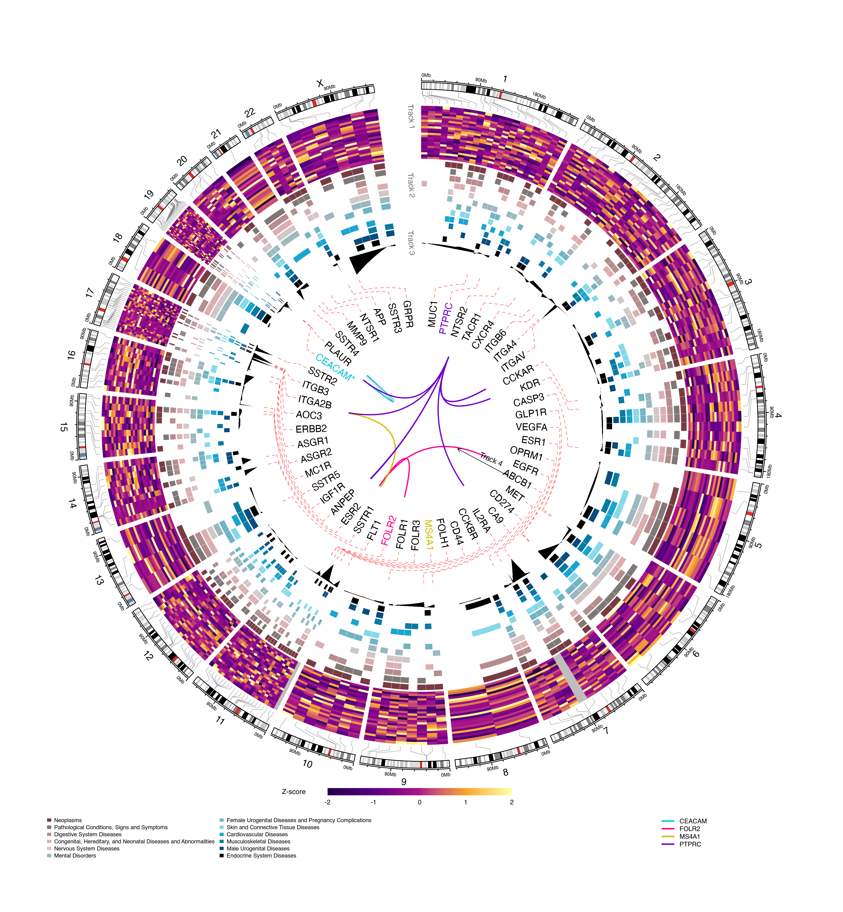
- 原版高清图 + 完整 R 源码
- 接入本地 MCP 一键改编 ✅
ACT 05 · 真实本机 MCP + 代码实跑演播厅
▶ 点任意行自动跑代码出图
26 / 38
现场演示：PlotCase & 顶刊美图社（代码实跑出图）
实时渲染画布
点击左侧任意推荐行：自动滚动运行真实 R 代码 → 现场出图
$ Rscript 正在执行…
ACT 05 · 顶刊配色铁律
▶ 现场点击切换色板 & 色盲
27 / 38
配色铁律：统一、语义、严禁彩虹色
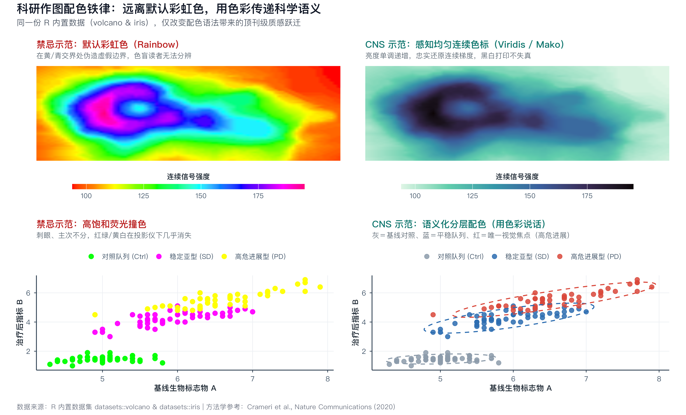
ACT 05 · 排版与字体铁律
28 / 38
排版与字体：整齐为王、禁用 Times New Roman
排版：逻辑第一 · 极度整齐
字体：统一 Arial / Helvetica
禁用新罗马：85mm 单栏缩印发糊
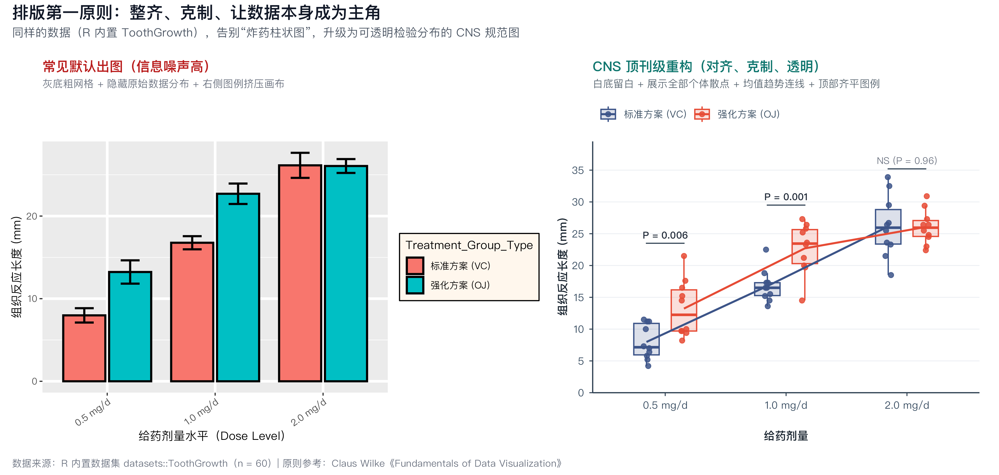
告别灰底“炸药柱状图”
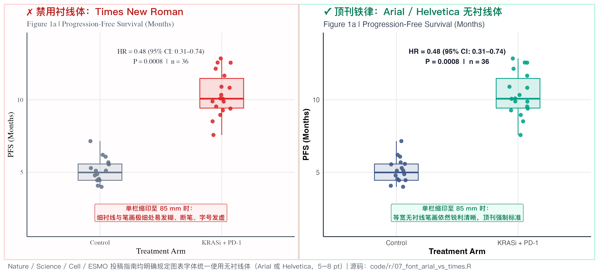
85mm 单栏清晰度实测
ACT 05 · 顶刊实战 · 多面板叙事统御
29 / 38
进阶挑战：多面板组合图的叙事统御
单图容易，组合图最见科研功力
Panel a → h 层层递进完整证据链
严格对齐 · 统一字号 · 全局色系
Nature 2025 · 免疫治疗 8-Panel 原图
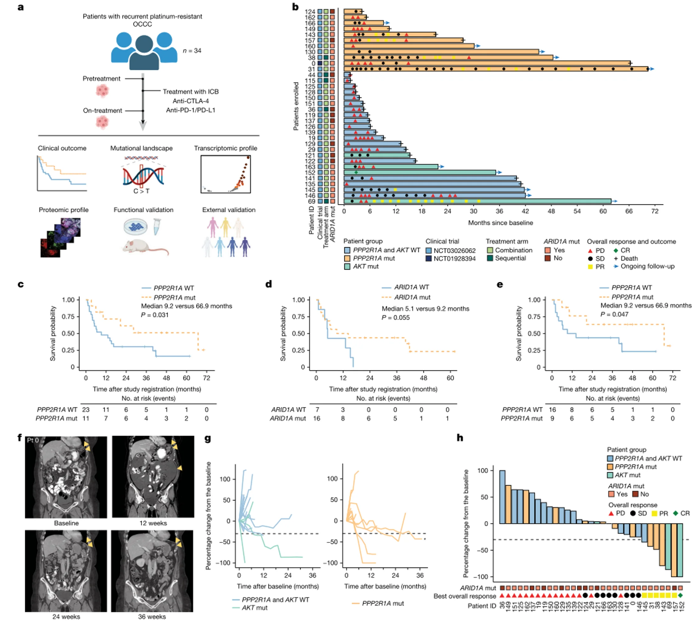
讲者实战 · 5-Panel 突变机制组图
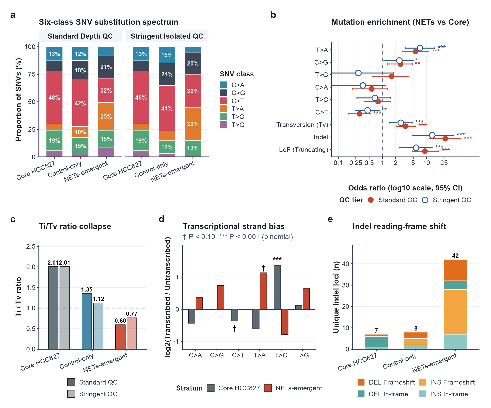
ACT 05 · 双轨出图 · 矢量精修 × 机制图
30 / 38
后期精修 & 机制图：AI/PS × Nano Banana
Nano Banana 示范 · NSCLC 靶免机制
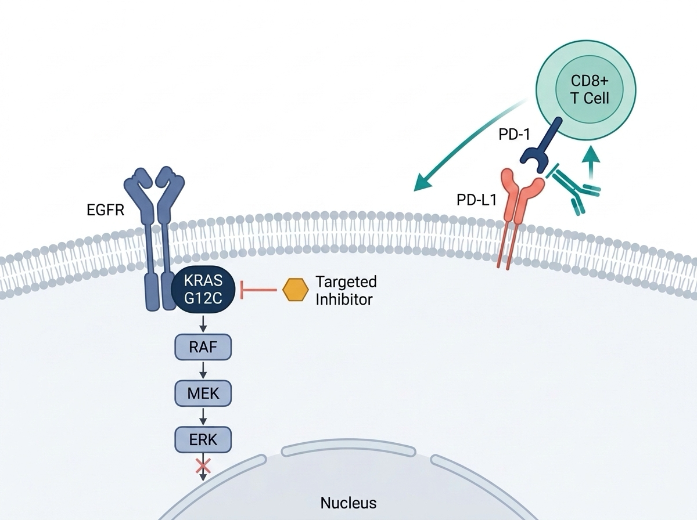
⚠ 红线：严禁文生图伪造实验数据 · 投稿必查目标期刊 AI 政策！
ACT 05 · 出版级细节 · 审稿人视角
31 / 38
出版级细节：图、图注与正文绝不重复
① Figure 图形 · 视觉第一眼
- 一眼看清高低与曲线分离
- 仅标核心 HR / P 值，绝不堆字
② Legend 图注 · 独立说明书
Fig. 2a | Kaplan–Meier OS Curve
Cohort n = 128;
two-sided Log-rank test;
bands show 95% CI;
OS, overall survival.
- 交待样本量 n、误差线与统计法
- 不看正文也能独立读懂整张图
③ Main Text 正文 · 提炼意义
❌ 机械抄数：12月 82%、24月 65%、对照 51%…
✅ 提炼结论：靶免联合将死亡风险降低 42% (Fig. 2a)。
- 绝不机械复述图上每个数字
- 聚焦临床价值并索引
(Fig. 2a)
💡 审校绝招：把目标期刊 Author Guidelines 原文直接喂给 Agent 逐条核查！
ACT 06 · 科研伦理与坦诚
32 / 38
坦诚声明 AI & 戳破“去水印”误区
真相：隐形频域指纹根本洗不掉（SynthID）
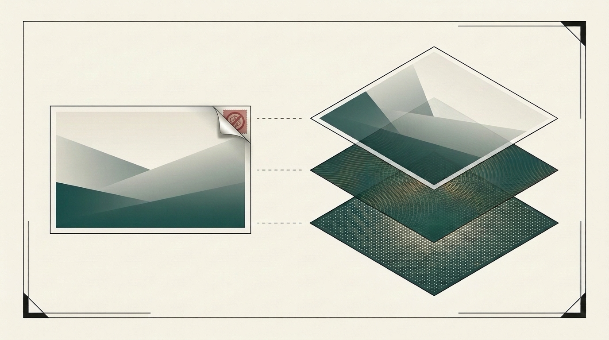
❌ 误解：剪掉角落 Logo
✓ 现实：全图频域/词元指纹
阳光正道：ICMJE 第五节声明规范
- 绝不把 AI 列为作者，人类负全责
- 坦诚交代：工具 · 版本 · 具体用途
📄 可直接套用的投稿声明范本（Methods）
“During preparation of this work, the authors used
[Claude / Gemini] for
[R script drafting & language editing].
All analyses were independently verified by the authors, who take full responsibility.”
✓ 写入 Methods / 致谢
✓ 保留代码与审校记录
ACT 06 · 科研工程化 · 复利与出版未来
33 / 38
软件工程思维做科研：三大件托管 GitHub
讲者实践：全量版本可控复现仓库
RAS-Targeted-Therapy-Reproducibility
├── 01_raw_data/ # ① 脱敏原数据
├── 02_clean_data/ # ② Tidy 中间表
├── 03_scripts/ # ③ R / Py 全流程源码
├── 04_figures/ # ④ 出版级矢量终图
└── renv.lock # 锁定包版本一键重跑
├── 02_clean_data/ # ② Tidy 中间表
├── 03_scripts/ # ③ R / Py 全流程源码
├── 04_figures/ # ④ 出版级矢量终图
└── renv.lock # 锁定包版本一键重跑
v1.0 投稿
→
v1.1 返修
→
v2.0 见刊
出版延展：从“静态纸书”到“开源活指南”
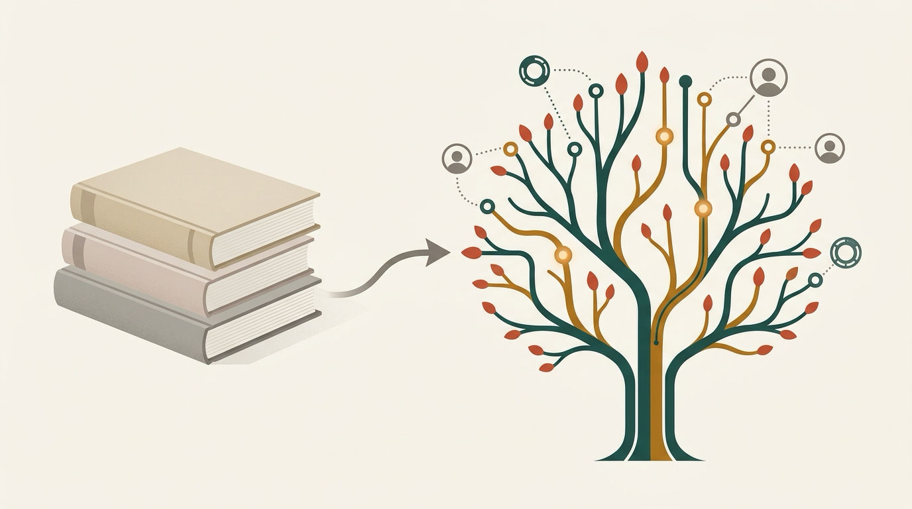
纸质专著：出版即过时
开源活指南：全球实时迭代
ACT 06 · 终极叩问 · 盲评铁证
34 / 38
终极叩问：当 AI 写论文、审论文、读论文……
202 对论文盲评 · Fig. 15d
- AI 反超：规范 · 严谨 · 可复现
- 人胜出：Novelty 原创性
- 人胜出：Significance 重要性
什么样的研究，才真正值得写？
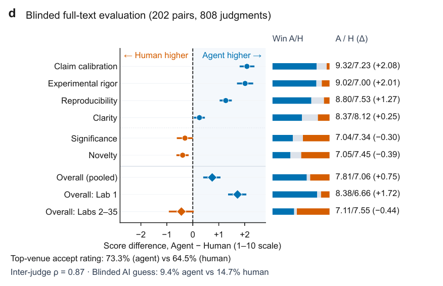
Ahmad et al. (Nov 2026) Fig. 15d · 202 对盲评森林图（点击放大）
ACT 06 · 核心壁垒 · 呼应开篇
35 / 38
AI 时代，人类不可替代的两大核心壁垒
01
价值取向与价值判断
- 为什么做？临床真痛点 vs 凑数灌水
- 值不值得？决定一项研究的长期生命力
“你可以外包你的思考，
但不能外包你的理解。”
但不能外包你的理解。”
— Andrej Karpathy
🤖 AI 接管“怎么做”
检索 · 编码 · 绘图执行
🩺 人定“做什么”
真痛点 · 值不值得做
02
审美与品味 · 美真实存在
🎨 名画配色 GitHub
MetBrewer · 大都会名画
📚 传世配色经典
和田三造《配色总鉴》· Albers
🏭 产业色彩巨头
Pantone 彩通 · DIC
PANTONE
DIC
🌐 国际色彩组织
CIE (LAB) · NCS · RAL
一切科学审美的底线：美的前提是真
ACT 06 · 讲者学习心法 · 拒绝追逐中间产物
36 / 38
给同道的学习建议：啃透一篇论文，三层动手进阶
第一法则：不追过客名词，只啃底层基石
Attention Is All You Need
15页 · Google
外行花 1 年彻底看懂每一层 → 其余热词皆是“修修剪剪”！
🛠️ 必须亲手跑代码，才能体会“涌现”
在 Hugging Face / GitHub 拉取开源小模型，亲手测试：
Token 分词
Word2Vec 向量
GPT-2 语义计算
第二法则：由浅入深 · 扎实进阶三层塔
💬 如何找工具、搞账号、保持持续驱动力？
“瘾君子总能找到大麻，
你找不到说明你还没有上瘾。”
你找不到说明你还没有上瘾。”
ACT 06 · 致谢与透明声明 · 践行 ICMJE 诚实原则
37 / 38
致谢：本次分享使用的工具、调用、文献与知识来源
🤖 AI 模型、Agent 与软件引擎
- Claude / Claude Code · ChatGPT / Codex
- Gemini + Antigravity（本课件多代理协同构建）
- Gemini Nano Banana（科学机制与概念插图）
- 腾讯 Chatterfly · R / Python / ggplot2
🔌 本机调用 MCP 与开源代码库
- PlotCase MCP & 顶刊美图社 MCP（原图+源码）
- FigureYa · PlotOnePiece · Data to Viz
- awesome-scientific-figure-prompts
- 讲者本地肿瘤 RAG & ESMO GitHub 复现库
📚 核心参考文献与行业规范
- Vaswani et al., Attention Is All You Need (2017)
- A Society of AI Scientists (2026) · Alpöge / Lean FRO
- Crameri et al., Nat Commun (2020) · CNS / NEJM 范例
- ICMJE 第五节 AI 声明规范 · Google SynthID
🎨 色彩美学、开源知识与致敬人物
- Prof. Thomas Garrity · Andrej Karpathy · 【闪客】
- MetBrewer · ggsci · viridis · CNScolor
- 和田三造《配色总鉴》 · Albers · Wilke
- Pantone 彩通 · DIC · CIE (LAB) / NCS / RAL
CLOSING · 首尾闭环
38 / 38
给野马套上 Harness，更要给大脑装上 Harness
EXTERNAL · 对外驾驭工具
Model Harness
- 治理 x · 压缩上下文 · 本地 RAG
- 代码执行 + 顶刊榜样 + MCP
INTERNAL · 对内守住底线
Human Harness
- 临床专业深度 · 价值判断 · 品味
- 坦诚声明 · GitHub 开源 · 良知
“美的前提是真，
在知识的海洋里，
我们至少可以不往里面扔垃圾。”
在知识的海洋里，
我们至少可以不往里面扔垃圾。”
⚠ 警示：1cm=12格尺子 +“虾滑”肿瘤
谢谢聆听 · 欢迎批评指正 | 王年飞 · 医生